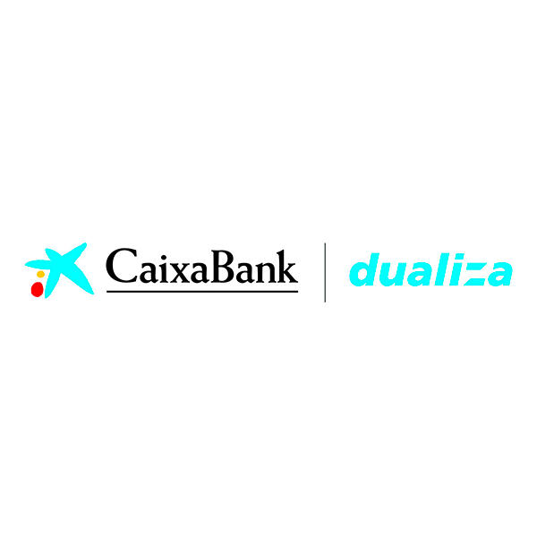
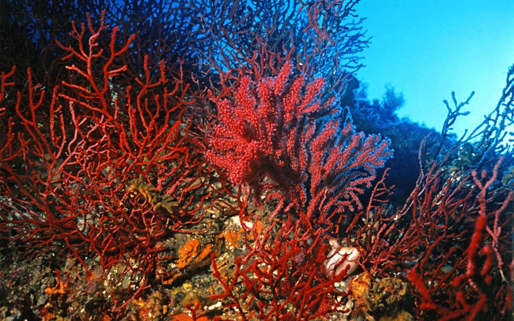

¿Qué es Dualiza?
La beca llamada Dualiza es una convocatoria de ayudas que organiza caixabank dualiza y la asociación de centros de formación profesional (FP Empresa), la cual está destinada a financiar los proyectos innovadores de Formación profesional (FP) desarrollados en colaboración entre centros educativos y empresas.

Oportunidad otorgada
Anteriormente, en el transcurso del curso 2024-2025, correspondiente a la VIII convocatoria, se intentó obtener dicha beca presentándose un proyecto para la investigación de un microorganismo no identificado encontrado conviviendo en unas corales. Sin embargo, esta petición fue rechazada o ignorada, por lo que no fue posible obtener dicho enfoco y financiación, aunque el interés de poder sacar a adelante y proceder con el desarrollo de este proyecto de investigación se mantuvo presente.
Finalmente, en la IX convocatoria, correspondiente al curso 2025-2026, el centro educativo Institut Puig Castellar de Santa Coloma de Gramenet consiguió obtener la aceptación para el desarrollo de este proyecto. En esta ocasión, el centro mencionado colaboraria junto el IES Sierra de Guara, en Huesca, Aragón; y junto el Instituto Provençana, de l’Hospitalet de Llobregat. Además, se cuenta con la colaboración de un científico del Museo de Historia Natural de Viena, en Austria.
Esta colaboración entre diferentes centros educativos y un investigador científico permitió enriquecer el proyecto, compartir conocimientos y acercar al alumnado al trabajo de investigación científica. De esta manera, la participación en la IX convocatoria supuso una oportunidad para desarrollar el proyecto y conocer diferentes formas de trabajar en el ámbito de la ciencia.
